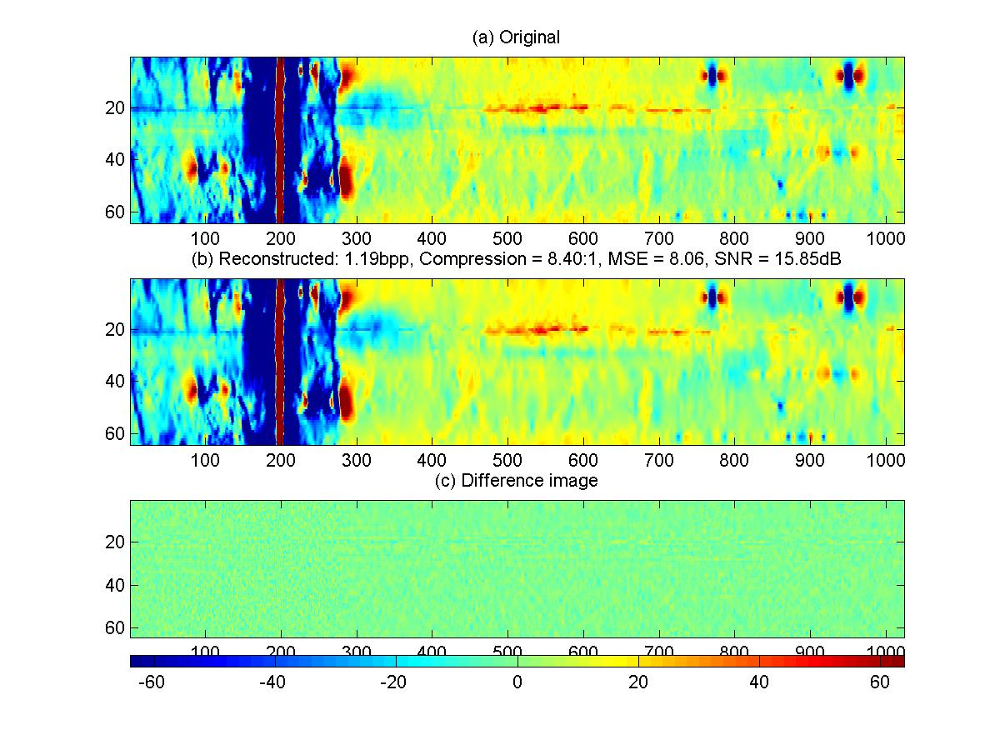
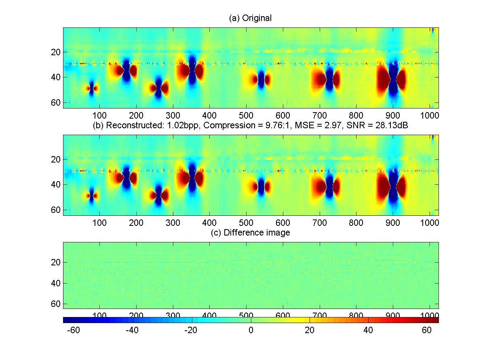

A popular method of oil and gas pipeline inspection is through automated magnetic imaging. The residual intensity image of the interior pipe wall generated through this process is subsequently analyzed to identify and classify anomalies and defects. Such a method allows for preventive maintenance of the pipe in a cost effective manner.
One of the major problems involved in this application is the quantity of data. For example, the robotic device collecting image information can easily collect 1000GB of raw data for typical large pipes. Obviously the exact amount of data varies according to the sampling rate (typically between 10 to 12 bits/sample), the number of circumferential sensors located on the device (depends on pipe diameter), and the length of the pipe. In any case, this quantity of data is expensive to store and awkward to process. Lossless compression techniques cannot yield significant compression ratios, whereas traditional lossy compression (such as JPEG) can eliminate details which are imperative to the defect detection and quantification process.
The objective of this research has been to look at wavelets and multiresolution techniques for effective compression of such images. The broad field of wavelets offer excellent energy-compacting ability (vanishing moments), distortion suppression (regularity) characteristics and time-frequency localization properties that make them ideal candidates for compression applications. Wavelet methods can be particularly effective when combined with an effective quantization (such as Zerotree scalar or vector quantization) and entropy coding scheme (such as Huffman or Arithmetic).
We used a variation of the well known Embedded Zerotree Wavelet (EZW) algorithm (see J. Shapiro. Embedded image coding using zerotrees of wavelet coefficients. IEEE Transactions on Signal Processing, 41(12): 3445-3462, 1993) for effective compression of such images. Some results of our MATLAB prototype can be seen below:

